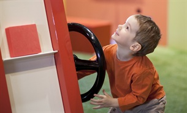

The Montreal Science Centre is a science museam located on the King Edward Pier in the Old Port of Montreal. Established in 2000 and originally know as the iSci Centre, the museum changed its name to the Montreal Science Centre in 2002. The museum is home to interactive exhibitions on science and technology as well as an IMAX theatre for interesting documentaries and movies.
The Science Centre hosts permanent exhibitions and special temporary exhibitions. They are both appealing to people of all ages.
Here are a few permanent exhibitions:
| Name | Synopsis | |
|---|---|---|
| Clic! The Zone For Curious Young Minds |
Clic! The Zone for Curious Young Minds is our new discovery space designed especially for children aged 4 to 7 years old! In a fun environment, surrounded by shapes and colours, children can participate in building a house, designing a roller coaster, create forms and patterns, and mix colours. In exploring Clic!, young minds are initiated into the world of science, all the while having tons of fun! |
 |
| Science 26 |
In the exhibition, 26 islands, each one dominated by a letter of the alphabet. Behind each letter, a scientific concept that can be explored through a variety of activities and experiences. |
|
| Mission Gaia |
As you enter, you see a huge fresco representing the resources required and the waste generated at each step in the life cycle of a t-shirt from production to use and disposal. What can you conclude from this presentation? Come and see for yourself! |
|
| Technological Showcases |
Eleven pairs of innovations are showcases in the corridor on level 2. Each pair illustrates a specific technology, from digitization to shape-memory materials, sound recording, etc. The associated content is designed to answer your questions directly: What is it? How will it change my life? How does it work? |
| Age | Price |
|---|---|
| Adult | $15.00 |
| Teen (13-17) | $13.00 |
| Child (4-12) | $8.50 |
| Family | $40.00 |
| Senior (60+) | $13.00 |

The current temporary exhibtion being showcased at the Science Centre is The Cave of Lascaux - Prehistoric Masterpieces. It started on April 17,2014 and will end on September 14, 2014.
Step back in time to the dawn of humanity and discover frescos created 20,000 years ago, long before civilization's humble beginnings. Life-sized reproductions unique in their kind offer you exclusive access to the cave with the most prehistoric art - a life-like journey into the heart of an otherwise inaccessible prehistoric monument.
| Age | Price |
|---|---|
| Adult | $21.00 |
| Teen (13-17) | $18.00 |
| Child (4-12) | $12.50 |
| Family | $58.00 |
| Senior (60+) | $18.00 |